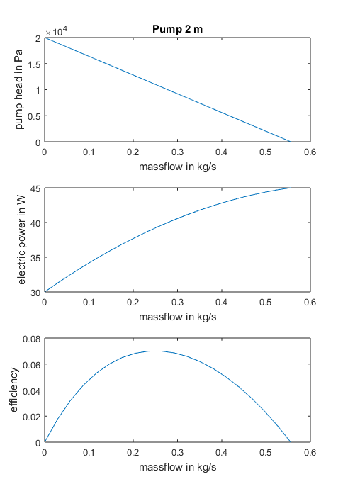
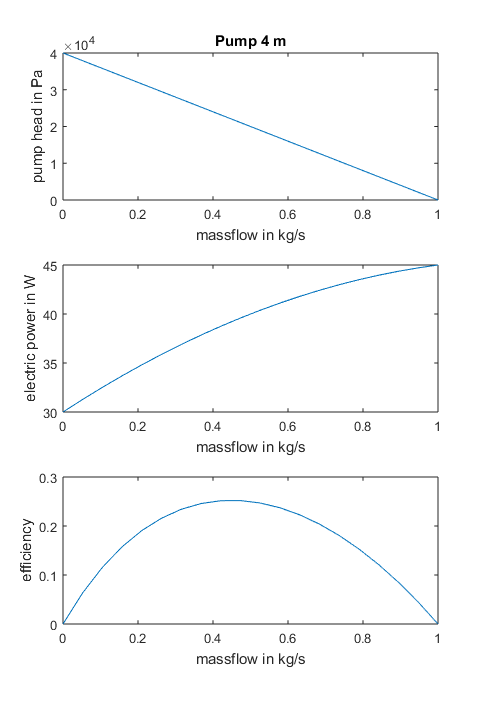
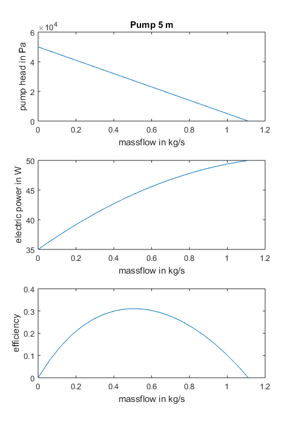
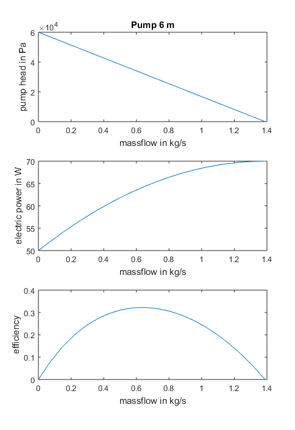
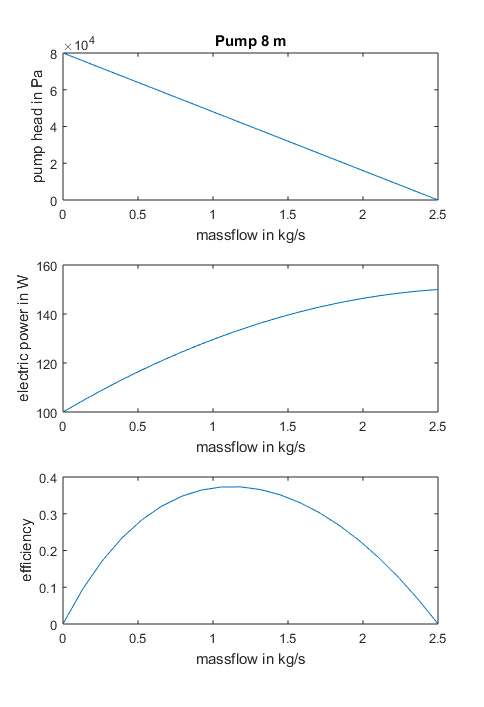
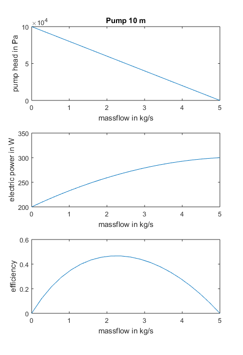

Pump_Main hydraulic and electric parameters
pressure - flow characteristics dp = a0 - a1*mdot - a2*mdot^2 a0 is the pump head in Pa a1 is the linear coefficient in Pa*s/kg a2 is the quadratic coefficient in Pa*(s/kg)^2 electric power consumption Pel = e0 + e1*mdot + e2*mdot^2
Contents
Parameter Set 'Pump2m.mat'
pump with 4 m head and linear hydraulic characteristic max flow with no pressure drop 3.5 m³/h electric power: 30 W (no flow), 40 W (1/2 max flow), 45 W (max flow)
hydraulic parameters
a0 = 20000
a1 = -36000
a2 = 0
pump head dp = 20000 + (-36000*mdot) + (0*mdot^2)
electric parameters
e0 = 30
e1 = 45
e2 = -32.4
electric power Pel = 30 + (45*mdot) + (-32.4*mdot^2)
 Parameter Set 'Pump4m.mat'
pump with 4 m head and linear hydraulic characteristic max flow with no pressure drop 3.5 m³/h electric power: 30 W (no flow), 40 W (1/2 max flow), 45 W (max flow)
hydraulic parameters
a0 = 40000
a1 = -40000
a2 = 0
pump head dp = 40000 + (-40000*mdot) + (0*mdot^2)
electric parameters
e0 = 30
e1 = 25
e2 = -10
electric power Pel = 30 + (25*mdot) + (-10*mdot^2)
 Parameter Set 'Pump5m.mat'
pump with 5 m head and linear hydraulic characteristic max flow with no pressure drop 3.5 m³/h electric power: 35 W (no flow), 45 W (1/2 max flow), 50 W (max flow)
hydraulic parameters
a0 = 50000
a1 = -45000
a2 = 0
pump head dp = 50000 + (-45000*mdot) + (0*mdot^2)
electric parameters
e0 = 35
e1 = 22.5
e2 = -8.1
electric power Pel = 35 + (22.5*mdot) + (-8.1*mdot^2)
 Parameter Set 'Pump6m.mat'
pump with 6 m head and linear hydraulic characteristic max flow with no pressure drop 3.5 m³/h electric power: 50 W (no flow), 65 W (1/2 max flow), 70 W (max flow)
hydraulic parameters
a0 = 60000
a1 = -43200
a2 = 0
pump head dp = 60000 + (-43200*mdot) + (0*mdot^2)
electric parameters
e0 = 50
e1 = 28.8
e2 = -10.368
electric power Pel = 50 + (28.8*mdot) + (-10.368*mdot^2)
 Parameter Set 'Pump8m.mat'
pump with 8 m head and linear hydraulic characteristic max flow with no pressure drop 3.5 m³/h electric power: 100 W (no flow), 135 W (1/2 max flow), 150 W (max flow)
hydraulic parameters
a0 = 80000
a1 = -32000
a2 = 0
pump head dp = 80000 + (-32000*mdot) + (0*mdot^2)
electric parameters
e0 = 100
e1 = 36
e2 = -6.4
electric power Pel = 100 + (36*mdot) + (-6.4*mdot^2)
 Parameter Set 'Pump10m.mat'
pump with 8 m head and linear hydraulic characteristic max flow with no pressure drop 3.5 m³/h electric power: 200 W (no flow), 270 W (1/2 max flow), 300 W (max flow)
hydraulic parameters
a0 = 100000
a1 = -20000
a2 = 0
pump head dp = 100000 + (-20000*mdot) + (0*mdot^2)
electric parameters
e0 = 200
e1 = 36
e2 = -3.2
electric power Pel = 200 + (36*mdot) + (-3.2*mdot^2)
 Literature
/1/ Grundfos: GRUNDFOS DATA BOOKLET UP, UPS, UPSD Circulator Pumps Grundfosliterature-6013408.pdf http://net.grundfos.com/Appl/ccmsservices/public/literature/filedata/Grundfosliterature-6013408.pdf access on 24dec2018